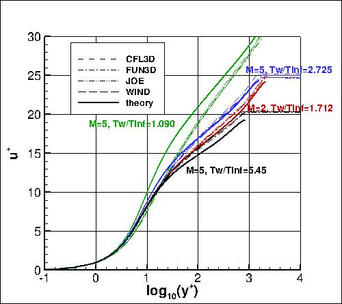

Langley Research CenterTurbulence Modeling Resource |
Jump to: SA Results, Wilcox2006-klim-m Results, EASMko2003-S Results, K-e-Rt Results
Return to: High Mach Number Flat Plate Validation Intro Page
Return to: Turbulence Modeling Resource Home Page
2D Zero Pressure Gradient High Mach Number Flat Plate Validation Case
SST-Vm Model Results
Link to SST-Vm equations

Previously on this page the results were reported as SST-V solutions, but more properly those from
CFL3D and OVERFLOW should be referred
to as SST-Vm. As discussed below, only relatively minor effects were noted.
Note that thorough
grid studies were not performed for validation cases such as this one.
Some effort was made to ensure reasonable grid resolutions, but there may still be
small noticeable discretization errors. Therefore, these validation results shown should be considered
representative, but not "truth."
Above, SST-V/SST-Vm results are from four independent CFD codes: CFL3D (NASA LaRC, USA), FUN3D (NASA LaRC, USA),
JOE (Stanford, USA), and WIND (NASA Glenn, USA).
Both CFL3D and FUN3D used freestream turbulence intensity=0.004% (M=2) and 0.002% (M=5) and freestream turbulent viscosity (relative to laminar)=0.009
(additional details can be found in the CFL3D User's Manual, Appendix H).
WIND used freestream turbulence intensity=0.002% and freestream turbulent viscosity (relative to laminar)=0.001.
Please read note 5 on Notes on running CFD page.
The codes all used the same 545 x 385 grids, and gave fairly close results.
Differences are due to discretization errors, iterative
convergence differences, boundary condition differences, and/or
possible code-to-code implementation-detail differences.
The right-hand plot is extracted from the location where Retheta=10000.
Note that these are
compressible code results using the standard SST-V or SST-Vm model (no compressibility corrections).
As for other two-equation model cases posted on the TMR website, the
Jump to: SA Results,
Wilcox2006-klim-m Results,
EASMko2003-S Results,
K-e-Rt Results Return to: High Mach Number Flat Plate Validation Intro Page Return to: Turbulence Modeling Resource Home Page
Recent significant updates: Responsible NASA Official:
Ethan Vogel
 term in the production was ignored in CFL3D and FUN3D
(often the default for codes whose predominant applications are low-speed
or transonic cases): the lack of this term indicates the SST-Vm version, rather than SST-V.
Generally speaking, for high-speed cases, the
term could be significant.
However, testing has revealed that for these particular high-speed flat plate cases, including
or ignoring this term only makes relatively minor differences
(on the order of the differences seen here between the codes).
Note also that use of SST or SST-Vm yields nearly identical results for this case.
The post-processed data files from CFL3D are given here for reference:
highmach_cfl3d_cf_sstv.dat and
highmach_cfl3d_u+_sstv.dat.
A typical CFL3D input file is:
ssflat_cfl3d_typical_sstv.inp.
A typical FUN3D input file is:
fun3d.nml_typical_sstv_m5t1p09.
term in the production was ignored in CFL3D and FUN3D
(often the default for codes whose predominant applications are low-speed
or transonic cases): the lack of this term indicates the SST-Vm version, rather than SST-V.
Generally speaking, for high-speed cases, the
term could be significant.
However, testing has revealed that for these particular high-speed flat plate cases, including
or ignoring this term only makes relatively minor differences
(on the order of the differences seen here between the codes).
Note also that use of SST or SST-Vm yields nearly identical results for this case.
The post-processed data files from CFL3D are given here for reference:
highmach_cfl3d_cf_sstv.dat and
highmach_cfl3d_u+_sstv.dat.
A typical CFL3D input file is:
ssflat_cfl3d_typical_sstv.inp.
A typical FUN3D input file is:
fun3d.nml_typical_sstv_m5t1p09.
08/28/2020 - changed SST-V naming to SST-Vm
Page Curator:
Clark Pederson
Last Updated: 03/12/2025